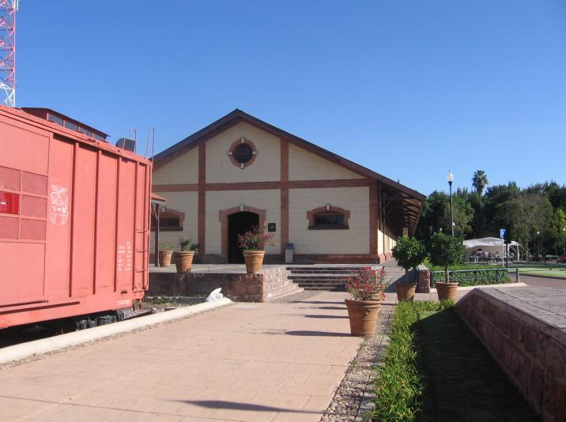
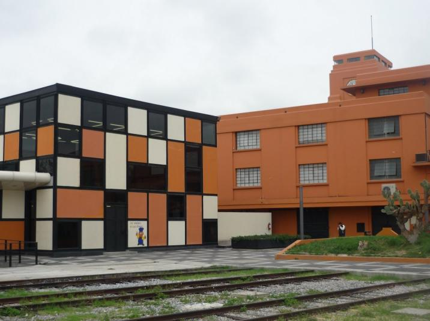
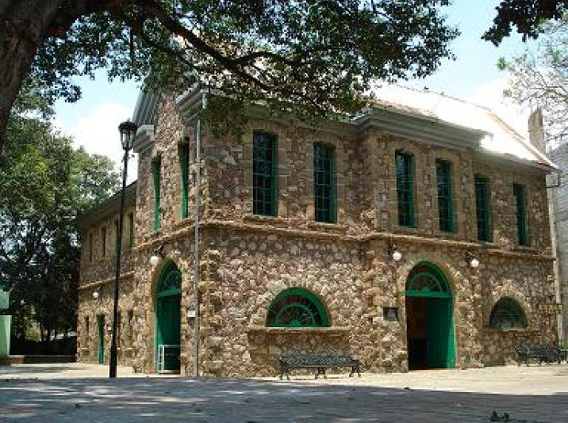
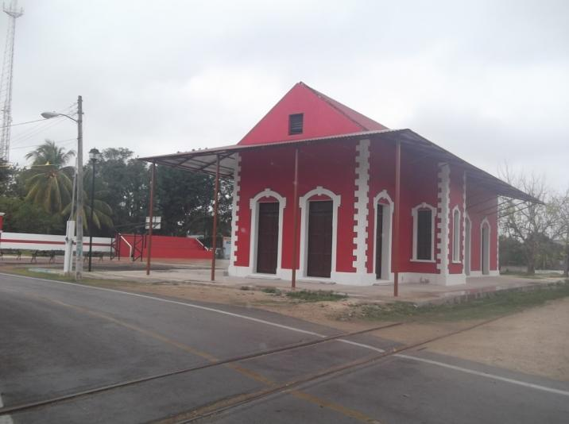
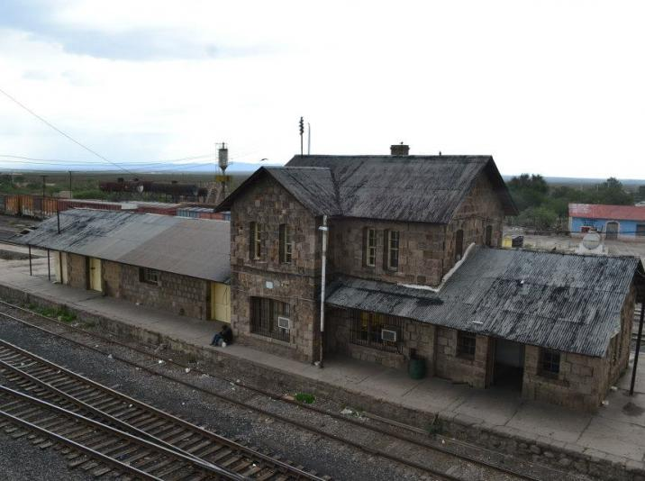
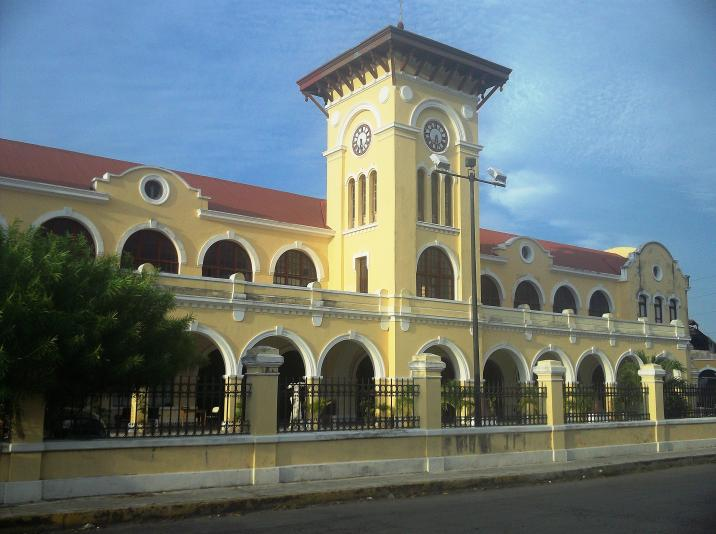

Monumentos
Históricos
Estaciones
Con la instalación de los caminos de hierro y la marcha ininterrumpida de los trenes, en México se hizo necesario edificar obras arquitectónicas e ingenieriles propias, necesarias para el buen funcionamiento del sistema ferroviario y de la actividad industrial especializada que impulsó.
Desde 1993 se han emprendido tareas de registro, inventario y catalogación de este patrimonio ferroviario edificado de gran valor histórico y cultural, para fines de estudio o salvaguarda. En ese proceso fueron desarrolladas herramientas que apoyan los diagnósticos y orientan la toma de decisiones en proyectos tanto de conservación como de creación de infraestructura cultural a partir de antiguas estaciones ferroviarias.
El Departamento de Monumentos Históricos y Artísticos es el responsable de coordinar la investigación, inventario y catalogación de los monumentos del patrimonio cultural ferrocarrilero dispersos por todos los rincones de México, permitiendo establecer mejores criterios en materia de intervención y fomentando así su conocimiento, revalorización, conservación y disfrute.
Complementa estas tareas el programa estaciones con más de setenta inmuebles reutilizados y al servicio de la comunidad en usos diversos tales como centros culturales, museos, bibliotecas, salas de lectura, escuelas, centros de capacitación e instalaciones de apoyo al turismo, entre otros.
Galería

Es un instrumento de información que impulsa y da fundamento a las acciones que se emprenden para la revitalización del patrimonio ferroviario. También funciona como recurso de apoyo para la toma de decisiones en la ejecución de proyectos de conservación y reutilización.
Dirigido a la consulta pública, contiene datos de 490 estaciones elevadas a la categoría de monumentos históricos ferroviarios, de acuerdo con la normatividad vigente del INAH.
Este archivo ha sido publicado por el Conaculta y se encuentra a disposición de la población a través de internet en la plataforma del Sistema de Información Cultural SIC en, http://sic.conaculta.gob.mx